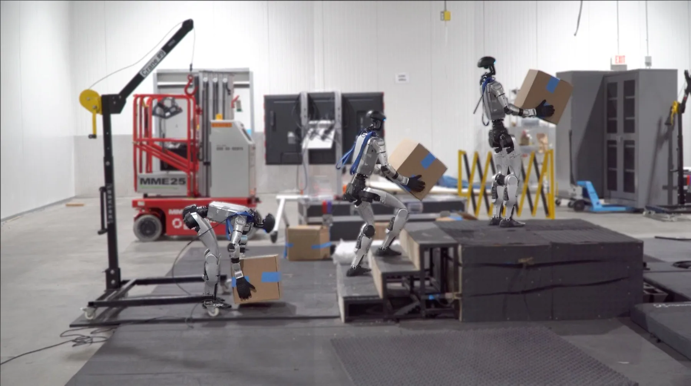
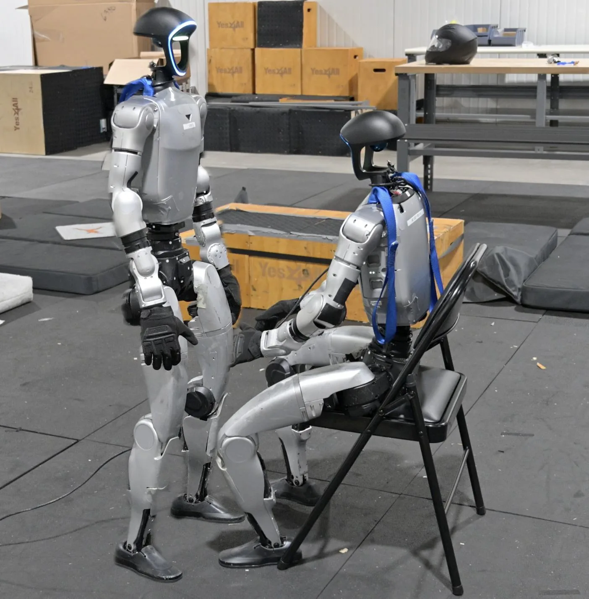
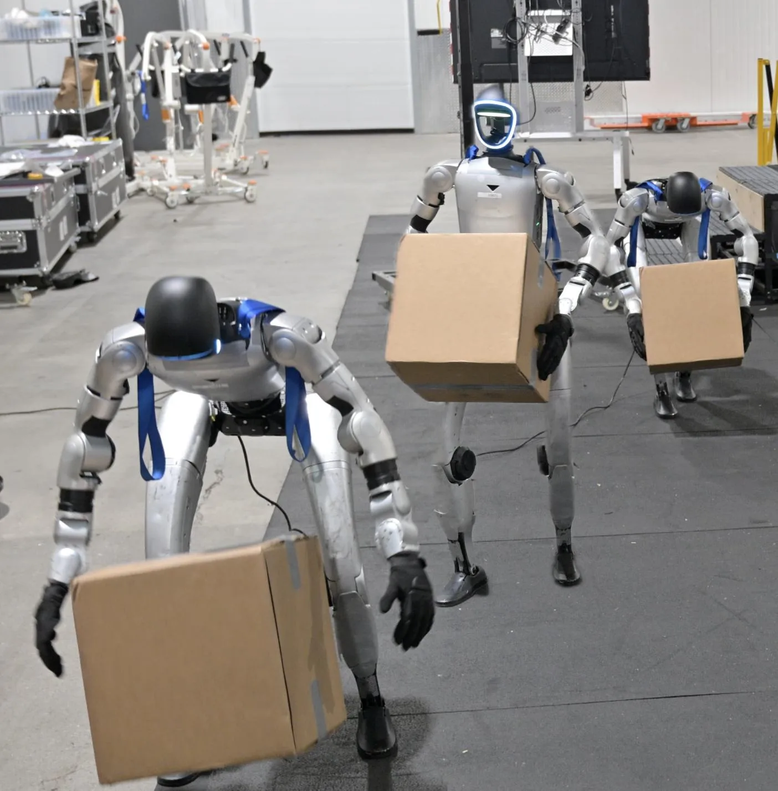
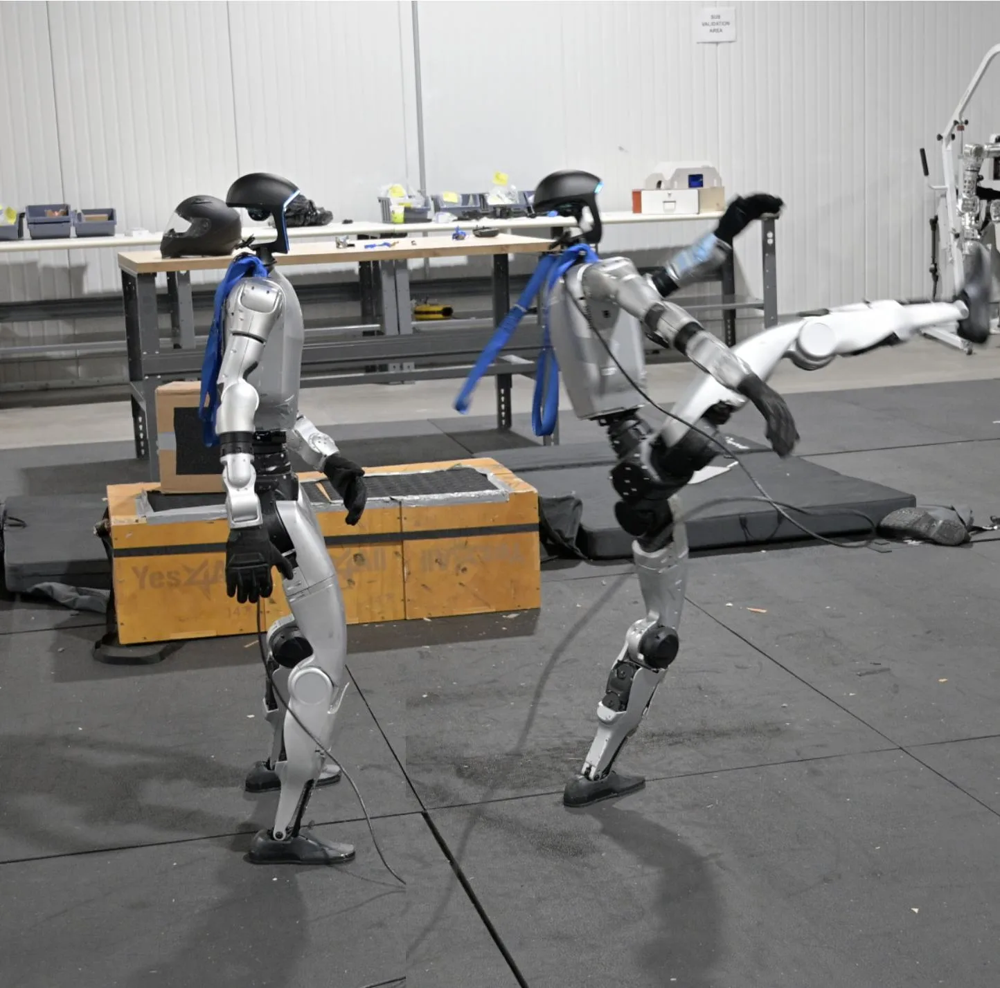
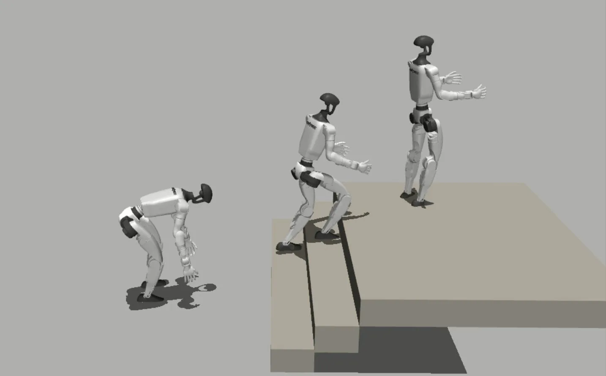

SceneBot：接触提示的通用人形全身跟踪与场景交互SceneBot: Contact-Prompted General Humanoid Whole Body Tracking with Scene-Interaction
偏机器人控制，但包含场景交互图、接触建模和重建数据生成，适合关注三维场景到控制接口的后续跟踪。
一句话工作总结
通过重建场景-交互图和接触标签训练人形策略，对将三维场景理解用于机器人控制有参考意义。
摘要
现有人形强化学习策略擅长自由空间运动，却难以处理与物体、地形的接触交互。SceneBot 在单一策略中同时条件化参考动作和每个连杆的接触标签，让策略显式知道预期环境交互。为弥补带标注交互数据不足，作者提出 hindsight scene reconstruction，从重定向人体运动中推断场景-交互图，并用约 7.5 小时接触丰富数据训练。实验显示，SceneBot 可泛化到未见动作和环境，完成搬箱上楼等长时程接触任务。
Current humanoid reinforcement-learning policies excel at free-space motions but struggle with contact-rich tasks, as pure kinematic tracking cannot resolve the physical ambiguities of interacting with objects and uneven terrain. To address this, we introduce SceneBot, a unified motion-tracking framework capable of handling freespace locomotion, terrain traversal, and whole-body manipulation. SceneBot conditions a single policy on both reference motions and per-link contact labels, explicitly defining expected environmental interactions. To overcome the lack of annotated interaction data, we propose a hindsight scene reconstruction approach that infers scene-interaction graphs from retargeted human motion. Trained on 7.5 hours of this reconstructed, contact-rich data, SceneBot successfully generalizes to unseen motions and environments. Our results demonstrate that SceneBot is the first general framework to seamlessly unify free-space and contact-rich behaviors executing complex, long-horizon tasks like carrying a box upstairs and establishing contact conditioning as a powerful interface for humanoid control. All code and data will be open-sourced. More demos and information are available at: https://ericcsr.github.io/scenebot/
中文解读摘录
- 为什么看：从“场景-交互图”和接触标签出发训练人形机器人全身跟踪策略，体现三维场景理解进入控制的路径。
- 方法要点：单一策略同时条件化参考动作和每个 link 的接触标签；用 hindsight scene reconstruction 从重定向人体动作中推断场景交互图，缓解交互标注不足。
- 结果信号：7.5 小时接触丰富数据即可泛化到未见动作和环境，执行搬箱上楼等长时程接触任务。
- 跟踪建议：如果关注机器人在重建环境中的交互执行，建议看其场景重建粒度、接触标签格式和 sim-to-real 假设。
- 链接：abs · PDF · 项目页：https://ericcsr.github.io/scenebot/
图表/页面预览
{kind=link}
{kind=link}

{kind=link}

{kind=link}

{kind=link}

{kind=link}
